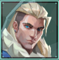
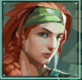

ソーヴァ
弓やドローンを使い、索敵するロシア出身のイニシエーター。
定点などがあり、覚えることがあるが、スキルはシンプルで使いやすい。しかし、ドローンの操作だけが難しい。
スキル
オウルドローン
索敵するドローンを使用する。操作中にマーキングダーツを発射し、このダーツが敵に命中すれば2回強調表示で位置が表示される。

リコンボルト
弓を構え、前方に放つ。左クリックの長押し度合いで距離が変わる。右クリックで最大2回までバウンドする。矢が着弾すると視線が通る敵の位置を特定する。特定された場合は強調表示で表示される。
アルティメットスキル
ハンターズフューリー
必要ポイント数:8
弓を構え、最大3回打てるエナジーブラストが使用可能。エナジーブラストは一直線に発射され、射程距離が長く、壁を貫通する。敵にダメージを与えるとその位置を表示する。
ブリーチ

スウェーデン出身のイニシエーター。敵に撹乱を与え、戦況を有利にする。
スキルは強いが、味方との連携が必要なため、パーティーを組んだ際に強力。
スキル
アフターショック
障害物に発射して、貫通して2回爆発を起こす。円状の範囲が出てきて、その範囲内にいるプレイヤーはダメージを受ける。
フラッシュポイント
指定した壁の向こう側にフラッシュが発動し、目をくらます。フラッシュが画面内に入ったプレイヤー全ての目をくらませる。
フォールトライン
地面を揺らして、直線範囲に衝撃波を相手を妨害する。スキルゲージがあり、左クリック長押しで飛距離を伸ばすことが可能。直線範囲内に入った敵と味方の移動速度低下、視界が揺れる、エイムがブレ、発射レートが遅くなる(スタン状態)。
アルティメットスキル
ローリングサンダー
必要ポイント数:9
広範囲を揺らし、敵を大きく妨害する。範囲内にいる敵と味方の移動速度低下、視界が揺れる、エイムがブレ、発射レートが遅くなる(スタン状態)。
スカイ
オーストラリア出身の獣たちを使い索敵を行う。
ガイディングライトの操作が難しいが、その他のスキルは簡単で使いやすい。
スキル
リグロウス
味方を回復するスキル。範囲が決められており、左クリック長押し中は範囲内にいる味方全員回復する。
トレイルブレイザー
猛獣を操作し、索敵する。ジャンプ可能。視界が悪く見える距離が限られている。敵に噛み付くことができ、噛み付かれたらダメージを受け、移動速度低下、視界が揺れる、エイムがブレ、発射レートが遅くなる(スタン状態)。
ガイディングライト
鳥を構え、放ち、目をくらませる。左クリック長押ししながら、マウス操作で上下左右移動できる。好きなタイミングで起爆でき、目をくらませる。操作中に時間切れになると自動的に起爆する。
アルティメットスキル
シーカー
必要ポイント数:8
近くの敵を追尾するシーカー最大3体を放つ。シーカーに直撃した敵は視界がぼやけ、周囲の音が聞き取りにくい状態になる。シーカーは銃で破壊可能。
KAY/O
戦闘兵器。スキルを封じ込み、戦況を優位に進める。
マウス操作などのスキルもなく、スキルも強く、どのマップでも基本使えるため、初心者におすすめ。
スキル
フラグ/メント
地面に落ちると落下地点を中心に、ダメージを与える範囲円が出てきて、4回衝撃波を与える。範囲円内にいると、全プレイヤーダメージを受ける。
ゼロ/ポイント
スキルを封じさせるナイフを左クリックで投擲する。ナイフは直撃した場所に刺さり、範囲内にいた敵はスキルが約8秒間使用できなくなる。
アルティメットスキル
ヌル/コマンド
必要ポイント数:8
一時的にKAY/Oを中心とし広範囲に敵のスキルを使えなくさせるパルスを発生させる。KAY/O自身は発射レートとリロードの速度が上昇する。ダウンするとその場で止まり、倒されるまではヌル/コマンド使用状態が続く。ダウン状態から味方に起こしてもらうことも可能。
フェイド

トルコ出身のイニシエーター。悪夢の力を使い、敵を索敵する。
定点やマウス操作が必要なスキルがあり、覚えることがあるが、使い方がシンプルなため初心者に向いている。
スキル
プラウラー
最初に視界に入った敵を追跡する索敵スキル。敵がプラウラーに直撃すると約4秒視界が悪くなる。テラートレイルに沿わせることが可能。
シーズ
敵の行動を封じる拘束スキル。シーズを投げると地面にゾーンができ、地面に着地した際にゾーンの範囲内にいた敵は拘束され、動きが制限される。衰弱効果により一時的にHPとシールドが減り、聴力を失う。
ホウント
黒い球体を投げ着弾した際に敵をスキャンする索敵スキル。スキャンされるとテラートレイルと言われる一時的に黒い線が繋がれ、移動先を把握できる。相手の高い場所でも設置可能で広範囲を索敵できる。銃で破壊可能。
アルティメットスキル
ナイトフォール
必要ポイント数:7
範囲内の敵にHPとシールドが一時的に減る衰弱効果と聴力を奪う。敵に当たるたびに音がするため何人当たったかがわかる。敵にしか当たらないため味方には被害が及ばない。
ゲッコー
アメリカロサンゼルス出身のイニシエーター。クリーチャーたちを操り、フラッシュやスタンを使い勝利に貢献する。
スパイクを持たされるエージェントであり、設置する位置などを覚えないといけない。アルティメットスキルは操作が難しいがそれ以外のスキルは使いやすく初心者向け。
スキル
モッシュピット
着弾後に範囲内に3回ダメージを受ける液体のグレネード。特定のエリアを制圧したり、敵を追い払える。範囲内にいると全プレイヤーダメージを受ける。
ウィングマン
左クリックで歩いて前進する。壁に当たると跳ね返る。敵を検知すると追跡する。直撃すると移動速度低下、視界が揺れる、エイムがブレ、発射レートが遅くなる(スタン状態)。ウィングマンがスパイクを設置や解除を行うことも可能。銃やスキルに破壊可能。使用したあと球体のようなものが落ちており、回収が可能であり、回収した場合クールタイム後に再使用できる。
ディジー
ディジーを投擲し、敵を検知すると目くらましのフラッシュを発射する。目くらましを食らうと、ペンキで塗られたような画面になる。画面内に入ると目くらましを受ける。銃により破壊可能。障害物に隠れたりすることで避けることが可能。使用したあと球体のようなものが落ちており、回収が可能であり、回収した場合クールタイム後に再使用できる。
アルティメットスキル
スラッシュ
必要ポイント数:8
左クリックで飛び、爆発する。範囲内にいた敵は拘束され、武器を持てなくなり、移動速度も低下する。使用したあと球体のようなものが落ちており、回収が可能であり、回収した場合クールタイム後に再使用できる。